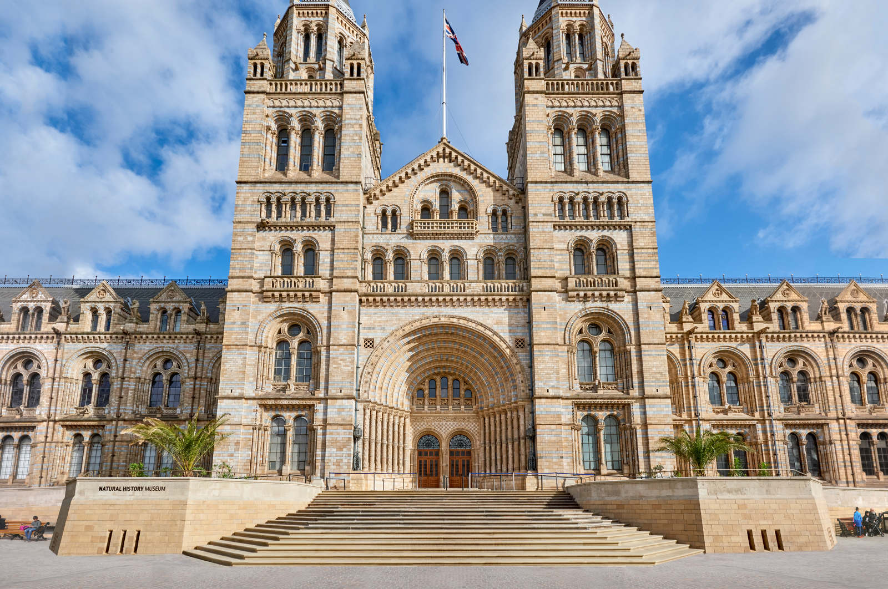
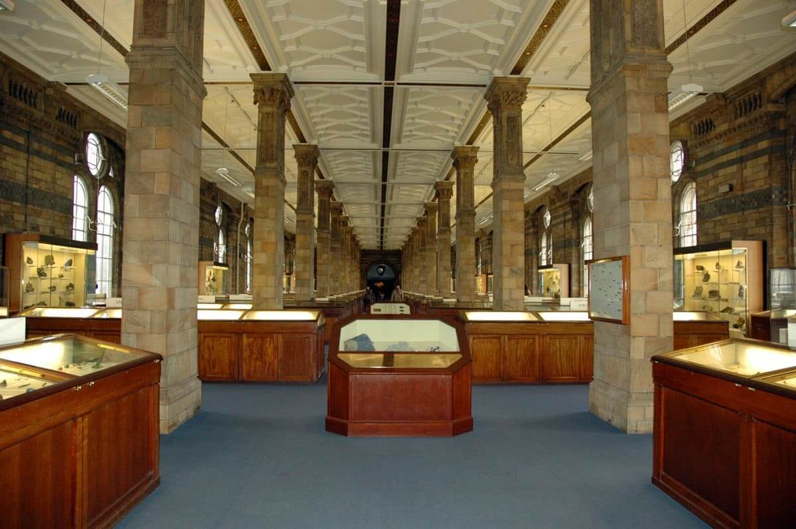

About Us
The mission of the SDSU Natural History Museum is to interpret the natural world through research, education and exhibits; to promote understanding of the evolution and diversity of southern California and the peninsula of Baja California; to train and grow our future leaders in research and conservation; and to inspire in all a respect for nature and the environment.
Our purpose is to emphasize this unique and diverse region while maintaining a global perspective; to collect and preserve scientific specimens for research and as a continuous record of the changing world for future generations; to serve as a center for the scientific study of biological diversity and evolution; to provide dynamic leadership in natural history and environmental education through exhibits, publications, and educational programs, striving to make this outreach relevant to all the people of the San Diego region; to foster cooperative efforts in natural history research and education throughout our region.
We believe the San Diego State University Natural History Museum will be the premier collections-based environmental education and natural history research resource in our region. We will provide programs that are timely, user-friendly, and relevant to the real-life needs of the diverse populations of the San Diego-Baja California region today and tomorrow. We will train the researchers that will bring our history into the future.
Founded in 1954, the San Diego State University Natural History Society was established to document and preserve the rich history and natural resources of the Southern California and the Baja region. In its initial years, the Society supported the region's scientific culture, serving a small but growing community eager for information about its natural resources. Since its formation society members have established a campus weather station, served as preservation volunteers for Torrey Pines State Reserve, Batiquitos Lagoon Foundation Nature Center, Anza-Borrego Desert State Park and other nature preserves in the region, and garnered support for the San Diego Zoological Society. The Society's crowning accomplishment is the creation of the San Diego State University Natural History Museum, the only university affiliated Natural History Museum in the south west.